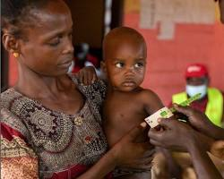
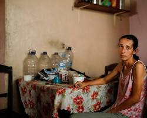
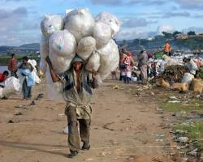
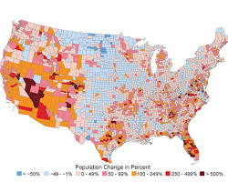
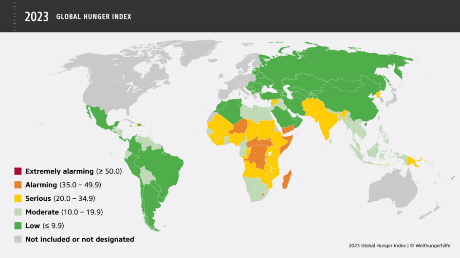

ZERO HUNGER PROBLEM
WHO IS FACING THE PROBLEM?
The problem of hunger and malnutrition, unfortunately, affects a vast and diverse range of people across the globe. Here's a breakdown of some of the most affected groups:
1. Children :
Number affected : 736 million children under the age of 15 suffer from chronic hunger, according to UNICEF.
Impact: This can lead to stunted growth, weakened immune systems, and impaired cognitive development.

2. Women:
Number affected: Women and girls are disproportionately affected by hunger due to social and cultural factors that limit their access to food and resources.
Impact: This can lead to maternal and child mortality, increased vulnerability to disease, and limited economic opportunities.

3. People living in poverty:
Number affected: Approximately 670 million people live in extreme poverty, defined as living on less than $2.15 per day. This lack of income makes it difficult to afford adequate food.
Impact: Hunger can trap people in a cycle of poverty, as it weakens their ability to work and earn an income.

4.People living in areas affected by climate change:
Number affected: Droughts, floods, and other extreme weather events caused by climate change are damaging crops and making it difficult to grow food, impacting millions worldwide.
Impact: This can lead to food insecurity and displacement, exacerbating existing hunger problems.
.

It's important to remember that these are just some of the groups most affected by hunger. The reality is that anyone can be vulnerable to hunger, depending on their circumstances.
By raising awareness of who is experiencing hunger and the complex factors that contribute to it, we can work towards finding solutions and building a world where everyone has access to sufficient, nutritious food.
WHAT IS THE PROBLEM?
1. Food Insecurity:
Insufficient access to food: Approximately 690 million people globally suffer from chronic hunger, meaning they don't have enough to eat regularly. This often disproportionately affects vulnerable groups like children, women, and those in poverty.
Lack of nutritious food: Even if people have access to enough calories, they may lack essential nutrients needed for healthy development and function, leading to micronutrient deficiencies.
2. Food Waste:
Significant loss of food: An estimated one-third of all food produced globally is wasted, amounting to roughly 1.3 billion tons annually. This represents not only lost food but also wasted resources used in its production.
3. Inequitable Food Systems:
Unequal distribution and access: Food production and distribution systems often favor wealthier regions and populations, leaving marginalized communities with limited access to nutritious and affordable food.
Lack of empowerment: Smallholder farmers, particularly women, face challenges in accessing resources, land, and markets, hindering their ability to produce and sell food effectively.
4. Underlying Factors:
Poverty and inequality: These root causes limit people's ability to purchase or grow food, creating a vicious cycle of hunger and poverty.
Conflict and instability: Wars and civil unrest disrupt food production and distribution, exacerbating hunger in affected areas.
Climate change: Extreme weather events and environmental degradation impact agricultural productivity and food security, posing a growing threat.
5. Consequences:
Health problems: Hunger and malnutrition contribute to a variety of health issues, including stunting, wasting, weakened immune systems, and increased risk of disease.
Economic burden: Malnutrition hinders cognitive development and reduces productivity, putting strain on economies and development.
Social instability: Food insecurity can contribute to social unrest and conflict, further jeopardizing peace and stability.
It's important to understand that tackling Zero Hunger requires addressing not just the immediate issue of food availability but also the underlying factors and systemic inequalities that contribute to the problem. Only through comprehensive and multifaceted approaches can we truly achieve a world where everyone has access to enough safe, nutritious, and sustainable food.
The Where and When of Zero Hunger
: A Global and Ever-Present Challenge
The problem of hunger and malnutrition, unfortunately, is not confined to a specific location or timeframe. It's a global issue that plagues various regions and contexts with varying degrees of severity. Here's a breakdown:
Geographically:
Widespread presence: Hunger exists in every continent and affects people across diverse countries, from low-income nations to developed ones.
Highest burden: Regions like Sub-Saharan Africa, South Asia, and Latin America bear the brunt of the problem, with millions facing chronic hunger and malnutrition.
Conflict zones: Areas experiencing war and civil unrest are particularly vulnerable, as food production and distribution are disrupted.

Source:welthungerhilfe
Contextually:
Poverty and inequality: These are the underlying drivers of hunger in many areas. People living in poverty often lack the resources to purchase or grow sufficient food, creating a vicious cycle.
Climate change: Extreme weather events like droughts, floods, and unpredictable rainfall patterns are increasingly impacting agricultural productivity and food security, particularly in vulnerable regions.
Unsustainable food systems: Inefficient practices, food waste, and lack of access to land and resources for smallholder farmers contribute to the problem.
Social and cultural factors: Gender discrimination, lack of education about nutrition, and traditional practices can limit access to food for certain groups, especially women and children.
Process:
Interconnected factors:The various causes of hunger often intertwine and exacerbate each other. For example, poverty makes people vulnerable to climate change impacts, which further worsens food insecurity.
Cycle of hunger: Malnutrition can trap people in a vicious cycle, hindering their ability to work and earn an income, ultimately perpetuating the problem.
Long-term consequences: The effects of hunger and malnutrition can have lasting impacts on individuals and communities, affecting health, education, and economic development.
Remember: Zero Hunger is not just a matter of "where" or "when." It's a complex global challenge that requires comprehensive and context-specific solutions addressing the root causes and inequalities that perpetuate the problem. Only through coordinated efforts and a commitment to sustainable food systems can we truly create a world where everyone has access to enough safe, nutritious, and sustainable food.
Why is Hunger a Problem?
A Multifaceted Crisis Demanding Our Attention
Hunger isn't just about empty stomachs. It's a multifaceted crisis with far-reaching consequences that impact individuals, communities, and the world at large. Here's why addressing it is crucial:
Human Cost:
Health: Hunger and malnutrition lead to stunting, wasting, weakened immune systems, and increased vulnerability to diseases, impacting millions, especially children.
Image of malnourished child with weak immune system
Education: Malnutrition hinders cognitive development, affecting learning abilities and limiting future opportunities.
Mortality: Children under five are 45% more likely to die from common infections when malnourished.
Economic Burden:
Lost productivity: Malnourished individuals have reduced physical and mental capacity, hindering their ability to work and contribute economically.
Healthcare costs: Hunger-related illnesses strain healthcare systems, diverting resources from other crucial needs.
Lost potential: Unfulfilled human potential due to hunger impedes economic growth and development.
Social and Environmental Impacts:
Instability: Food insecurity can fuel social unrest and conflict, threatening peace and stability.
Environmental degradation: Unsustainable food production practices driven by hunger can lead to deforestation, soil erosion, and climate change.
Migration: Hunger can force people to leave their homes in search of food, leading to displacement and social disruption.
Beyond these immediate impacts, hunger perpetuates a cycle of poverty and inequality. It traps individuals and communities in a vicious loop, making it even harder to escape hunger in the long run.
Addressing hunger is not just a moral imperative, but also an economic and environmental necessity. By investing in sustainable food systems, empowering smallholder farmers, and promoting equitable access to nutritious food, we can build a future where everyone thrives.
Remember, even small actions can make a difference. Supporting organizations fighting hunger, raising awareness, and making conscious food choices can contribute to a world where hunger is no longer a problem.
Let's work together to ensure that everyone has access to the basic human right of food.
ZERO HUNGER SOLUTION
Here's a comprehensive approach to solving the Zero Hunger problem, incorporating strategies across multiple levels:
Advocate for Change and Hold Governments Accountable:
Raise awareness about hunger and its causes: Educate the public and mobilize support for policies and actions that address hunger.
Hold governments accountable: Demand that they prioritize food security and invest in sustainable solutions.
Remember, achieving Zero Hunger requires a multi-pronged approach, addressing the various causes and dimensions of the problem. By working together, we can create a world where everyone has access to the food they need to live a healthy and productive life.
IDEAS WHICH WE CAN IMPLEMENT TO PREVENT HUNGER
1. By providig food banks in each city (small cities included) and villages:
By doing this we can do following :
(a) We collect leftover foods from nearby households, wedding lodge, parties and collect in our food banks.
(b) Distribute the food to needy people.
(c)By Aware the people not to waste foods
By doing these we can achieve our sustainable goal.
What is food bank?
Food Bank is made for poor people or those people who cannot afford food. And distribute food to them so that not a single person sleep hungry.
As we see in our life, that food remains in our house and we just throw it. Instead of throwing we can give it to FOOD BANK.
in functions like wedding , a lot of food get wasted. Here are the steps which we can do to prevent food wastage:
(i)Contact to the function owner and function planner owner.
(ii) Tell them that they give you a leftover foods.
(iii)Give the food to the food bank.
Then food bank will distribute the food to needy.
2.Achieving Zero Hunger by 2030
Empowering Smallholder Farmers:
Investing in infrastructure and resources: Provide access to seeds, fertilizers, irrigation, storage facilities, and market linkages.
Promoting sustainable practices: Support agroecology, climate-resilient agriculture, and soil conservation techniques.
Building capacity and knowledge: Offer training in financial management, pest control, and post-harvest handling.
3. Less job opportunities leads to hunger
->Single member employed in a family.
5. There is a less involvement of people in primary sector like farming, dairy, fishries etc. which leads to produce less crops and tend to hunger in the country.
6.Solutions to address food waste during pilgrimages:
Beneficial for local communities: Donating food can provide much-needed sustenance to disadvantaged communities near pilgrimage sites.
Alignment with pilgrim values: Many religions and pilgrimage traditions promote generosity and service to others. Donating food embodies these values and creates a positive impact on local communities.
Reduces waste and promotes sustainability: Utilizing excess food efficiently minimizes waste and promotes environmental sustainability.
7.Use of the technology to scale up the productivity
(a)Use of high yield varity seeds, drones.
(b)Use of latest technology: Sprinkler system.
Remember, Zero Hunger is not just a goal; it's a movement. It requires unwavering commitment, collaborative action, and a shared vision for a future where everyone has access to the nutritious food they need to thrive.
The journey towards Zero Hunger is paved with challenges, but every small step counts. By embracing innovative solutions, fostering inclusive partnerships, and nurturing a culture of respect for food and its sources, we can cultivate a world where the empty stomach becomes a relic of the past and sustainable nourishment becomes a reality for all.